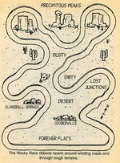
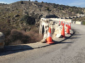
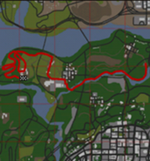

De: La Frikipedia, la enciclopedia extremadamente seria.
De: La Frikipedia, la enciclopedia extremadamente seria. De: La Frikipedia, la enciclopedia extremadamente seria.
Carreras ilegales patrocinadas por cárteles para blanquear dinero.
La creación de dos partidos beliciosos entre sí para fingir competitividad es una idea que viene antes de la Guerra. Desde entonces, el blanqueo de dinero en carreras ilegales es lo único que sendos partidos (o el partido) han realizado con relación con el mundo del motor. Eso y convertir la Nación en una colonia automovilística en la que por la compra de cada vehículo, el 70% se va fuera. Ahora, con una financiación infinita por eso del ‹‹Y tú más››, el PPSOE es el patrocinador con más financiación. Blanquea dinero procedente de licencias de ayuntamientos, donaciones sobredimensionadas de empresas y de concursos públicos. A veces finge que tiene disputas internas, hecho que queda reflejado en el raro comportamiento de dos de sus pilotos, el Rocomóvil, cuando comienzan a golpearse sus conductores violentamente con los garrotes.
El rumor del blanqueo de dinero en carreras del Planeta Tierra se propagó más allá del sistema solar por medio de contrabandistas de chatarra espacial en órbita, y pronto llegó a los oídos de los Hutts. Interesados en apuestas de dinero no declarado, mandaron una delegación (con sede en Marbella) para poder participar. Sin embargo, los hutts no esperaron econtrarse con las fuertes barreras de entrada creadas por el PPSOE: soborno para todos los pilotos, aumento de ingresos por publicidad y cheques-gasolina. Actualmente están negociando cómo repartirse el pastel, porque si se deja "apostar" a los hutts en las carreras terrestres, éstos permitirán a los terrícolas "apostar" en la Boonta Eve. De momento ya han regalado cuatro solares de Tatooine al PP y la gestión de la cantina al PSOE.
Napolitanos y sicilianos que emigraron a Estados Unidos para hacer las américas mediante el contrabando de alcohol durante la Ley Seca, pero que sin embargo acabaron por coaccionar fruterías locales para que los fruteros contrataran sus servicios a cambio de no prenderles fuego en sus establecimientos. Participan en las carreras autopatrocinándose, yendo varios capos en el mismo vehículo y aprovechando su propio peso para cargar y descargar los respectivos ejes en el momento propicio. Por ejemplo, para acelerar se van todos a los asientos de alante; mientras que para frenar... tiran a los más ineptos por la ventana (para reducir la masa y por ende la inercia). En los acelerones finales de las carreras, es común verles disparar sus tommys a los contrincantes de atrás, para ganar con ello propulsión a la vez que los matan. Hay veces que se dejan tantos cargadores que el conductor debe pisar el embrague como consecuencia de que ya incluso la sexta marcha hace de freno motor.
No vienen a blanquear sino a competir contra motores que prefieren el trabajo sobre el rendimiento, patrocinando vehículos ecológicos y sostenibles. Sin embargo, las malas lenguas aseguran esta escudería se trata de la avanzadilla tecnológica y monopolista de las compañías eléctricas en cualesquiera de sus formas: desde térmicas hasta nucleares.
El objetivo final de Green Peace en la participación en las carreras es el desarrollo y la financiación de un motor de propulsión nuclear, y desde que tal meta fue filtrada a los medios por un mecánico despedido, la empresa asegura que es para <<patentarlo y que otros no puedan usarlo>>.
Bien se puede hacer la vista gorda sobre las motivaciones de Green Peace, porque a fin de cuentas qué compañía puede vivir bajo el grito de salvemos a los delfines.
| Nombre | Propulsión | Foto |
|---|---|---|
| El Rocomóvil #1 | Motor de dos tiempos bicilíndrico. Estando los pilotos sentados en cada émbolo, ganan potencia cuando se pegan con los garrotes (mientras se gritan <<y tú más>> en idioma cavernícola). | |
| El Espantomóvil #2
Zombis y vampiros que improvisaron un vehículo poniendo ruedas a su mansión para huir literalmente del IBI. |
El dragón hace de bujía, pero en los esprines finales directamente se le roba combustible (el que usa para hacer su llamarada), conectando el bazo a los inyectores. | |
| El Auto Convertible #3
Diseñador del coche del Inspector Gadget. |
Tantas como cachivaches en los que se convierte, destacando aquella en la que se convierte en matamoscas gigante para aplastar a sus rivales a la vez que avanza. | |
| El Stuka Rakuda #4
Conducido por el Barón Rojo |
Motor de avión de pistones. En realidad se trata de un avión desechado por la Unión Soviética al confundir la fibra de carbono con plomo. De ahí que apenas consiga sustentación. | |
| El Compact Pussycat #5
Conducido por Penélope Glamur. |
Eléctrica para tener que usar un pedal menos y poder ser patrocinada por Green Peace. Curioso, porque todas las baterías las recarga en centrales térmicas. | |
| El Súper Chatarra Special #6
Conducido por un sargento y un soldado. |
Se trata de un tanque de la Segunda Guerra Mundial recuperado de una ciénaga. La contribución a la potencia se debe al par, por lo que lo pasa mal en las llanuras (debido a los pocos ciclos). | |
| La Antigualla Blindada #7
Conducido por Mafio y sus pandilleros. |
Se trata del único participante autopatrocinado, blanqueando el dinero obtenido de coaccionar fruterías de Estados Unidos y de vender gasolina libre de impuestos al resto de participantes. | |
| El Alambique Veloz #8
Conducido por un granjero holgazán y un oso cobarde. |
Estufa de carbón e iniciadores de combustión para barbacoas (los tacos blancos) a modo de nitro. | |
| El Superheterodino #9
Conducido por Pedro 'Engreído' Bello. |
La contribución a la potencia del motor se debe al número de ciclos, por lo que lo pasa mal en los puertos (debido al poco par). La extrema esbeltez del vehículo le permite atajar por agujeros a costa de perder estabilidad dinámica. | |
| El Troncoswagen #10
Conducido por un bruto leñador y un castor. |
Buena, a pesar de que las llantas dentadas vinieron de fábrica sin los neumáticos, implicando pérdida de adherencia en asfalto pero ganándola en gravilla. | |
| El Súper Perrari (El auto doble cero) #00
Conducido por Pierre Nodoyuna y su perro Patán. Agente de la Interpol enviado a las carreras para intentar poner fin a tanta mafia. |
Motor de reacción de un avión capaz de suministrar la velocidad de escape de la Tierra durante unos segundos, debiendo el piloto elegir entre subvirar contra el guardarraíles a 12 km/s o perder la carrera. | |
| El tío del Peugot 208
Auditor espontáneo de certificados de medio ambiente que hace que los rivales se estrellen en cuanto notan que deben pasar el control de emisiones. |
Diesel de cuatro cilindros e inyección directa. |
| Nombre | Descripción | Imagen |
|---|---|---|
| El desierto | También conocido como los precipicios, este circuito te llevará a una muerte segura, ya sea por sus escarpados picos, las arenas movedizas, el sofocante calor, tormentas de arena, cactilios salvajes o las numerosas trampas de Piérre. Se recomienda neumáticos extraduros y un nivel mínimo de locura de 0,3 Charlie Sheen. |  |
| Circuito VLC-Colmenar Viejo | Conocido gracias al paso de los ciclistas durante la Vuelta, se trata de un circuito patrocinado por VLC Media Player, pudiéndose encontrar sus iconos de publicidad en cualquiera de las curvas. La complejidad del circuito hace que los pilotos no se puedan adelantar, utilizándose normalmente para pruebas de contrareloj. |  |
| Ciudad Frikipedia | Circuito patrocinado por La Frikipedia. Se advierte que el mapa tiene muchos fallos, así que puede no renderizarse la pista adecuadamente, provocando alteraciones en la física de los vehículos respecto la misma. Se permite usar trucos como coche irrompible y habilidad de conducción al máximo, pero no el de coche volador. |  |
Canción de apetura de la serie
Autor(es):